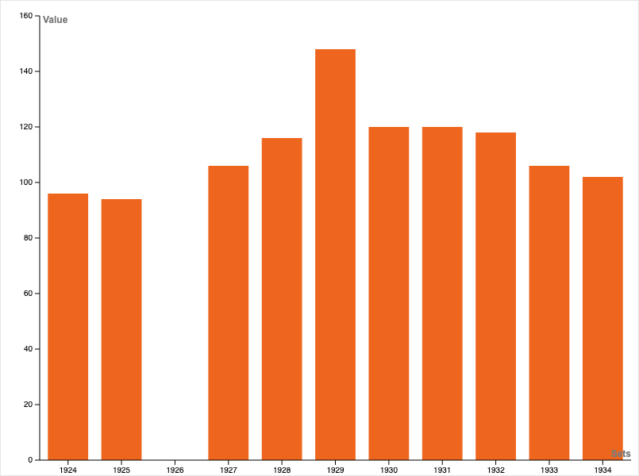
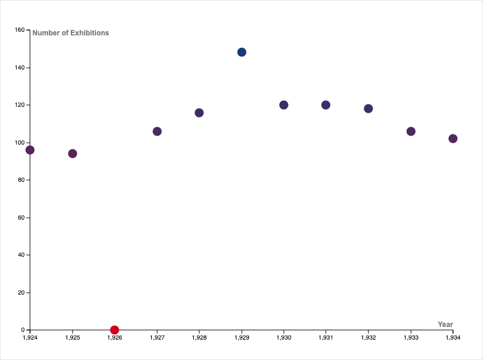
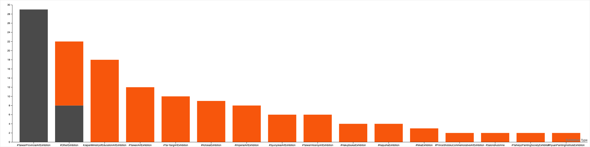

The Data
Exploratory Analysis
For this project, we have been exploring the Linked Open Data set: Linked Taiwan Artist and the Wikidata knowledge base.
Artistic production in Taiwan (1895-1945)
The most influential Taiwanese artists
Our data exploration starts with an overview of the artistic objects in the Japanese colonial period (1895-1945).
In this case, in our ontology, we are looking for all kinds artistic objects:
- Paintings
- Photographs
- Postcards
Top 3
Chen Cheng-Po has been the artists that produced the most in the period of reference: Japanese colonial period (1895-1945).
- Chen Cheng-Po: 157 paintings
- Yang San-lang: 35 paintings
- Liao Chi-chun: 27 paintings
- Li Shih-chiao: 25 paintings
- Chen Jin: 23 paintings
Almost 59% of the painting's production in the period of reference in Taiwan has been done by Chen Cheng-Po
The predominance of Chen Cheng-Po
Exhibitions per year

1926???

Taiwanese-International Exhibitions comparison

Types of artworks in the dataset